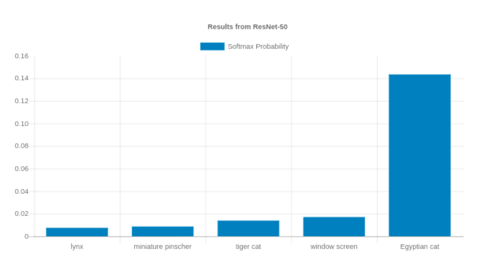

Calvin Feng

This is my index page to all my works and ideas.
Index
Blog Posts
Physics of Major Scale attempts to explain why is Major scale structured the way it is from a classical mechanics perspective.
Projects
Machine Learning Notebook
This is my central repository for collecting all my notes and references on machine learning, which includes a lot of mathematical derivations to better my own understanding of every algorithm I learned.
My Playground: Guitar Journey
I started learning guitar when I was a teenager. I didn’t continue and stopped because I enjoyed the glory of rock stars but couldn’t endure the tedium of everyday practices. Well, many years later, I’ve grown to be a more disciplined man. I built a tool to keep track of my timeline to monitor my progress and improvement.
TensorFlow in Go
I was trying to run TensorFlow with Go using C binding. It worked! But in retrospective, I don’t think the effort is worth production usage. I’d rather build a gRPC server in Python and let Go talk to Python to run TF models. Nowadays it’s even easier to just deploy the model on a SageMaker endpoint.

Popcorn the Movie Recommender
I was experimenting with matrix factorization and built a recommendation engine using MovieLens’ IMDB data. It has 25 million movie ratings from 160,000 users on 60,000 movies. I don’t host this service anymore because I didn’t want to pay for the AWS bills. However you can still see my source code. The algorithm can be found in my machine learning notebook.

MegaPx
This is the first ever full stack project I’d built, when I was still using Ruby on Rails. That sort of tells how “ancient” it is. It is supposed to allow users to upload high resolution images and browse by location. It’s basically a 500px clone. I built it for educational purpose. I actually felt that Rails put too many constraints on me. I’d rather build without heavy-weighted frameworks.

Studies
In my spare time, I like to write a GitBook on materials I learned from textbooks or online courses. However, for machine learning courses like CS229, CS232n, CS224n, they are captured in my machine learning notebook. I ran out of quota to make more free GitBooks.
Probablistic Robotics
This is my textbook notes on Sebastian Thrun’s Probablistic Robotics.
Georgia Tech OMSCS
This is my repostory for course notes from Georgia Tech OMSCS.
Go Notebook
This started out as a tutorial and then it beecame my personal references to Go syntax, tools, and design patterns.
Tools
Over the years I have worked with many different tools for different project needs. This is a high level overview of my “gear” list.